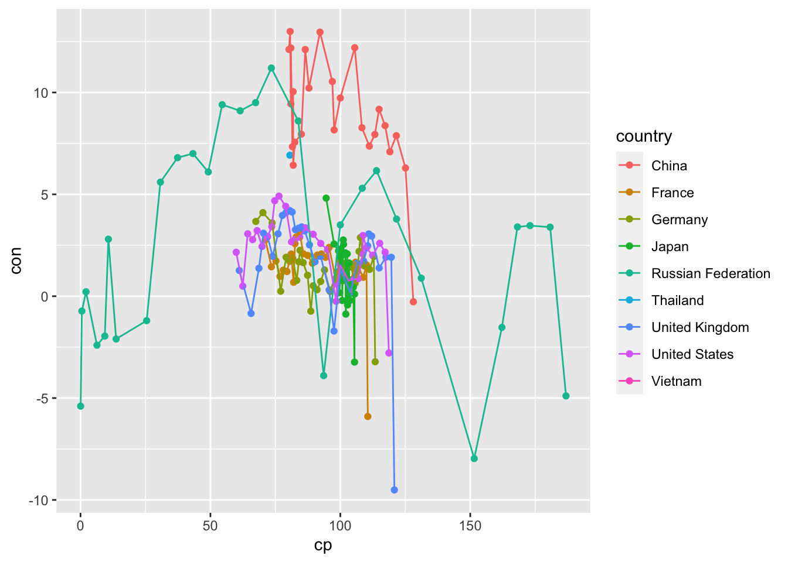
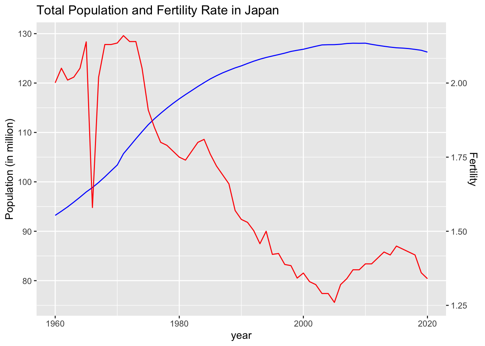
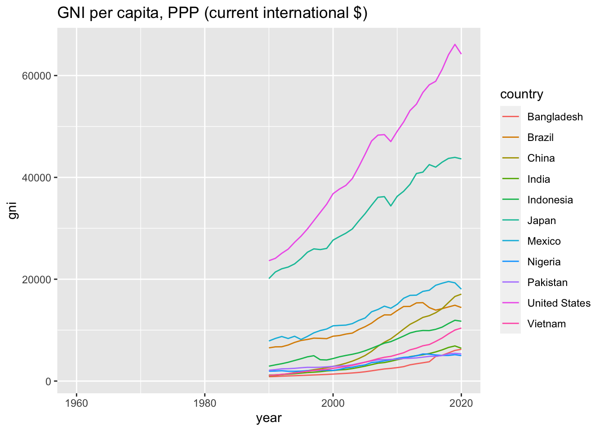
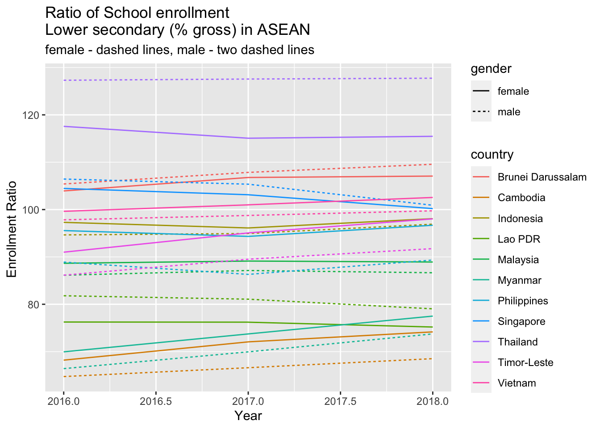

Chapter 4 Exploratory Data Analysis (EDA) 3
Course Contents
- 2021-12-08: Introduction: About the course
- An introduction to open and public data, and data science - 2021-12-15: Exploratory Data Analysis (EDA) 1 [lead by hs]
- R Basics with RStudio and/or RStudio.cloud; R Script, swirl - 2021-12-22: Exploratory Data Analysis (EDA) 2 [lead by hs]
- R Markdown; Introduction totidyverse; RStudio Primers - 2022-01-12: Exploratory Data Analysis (EDA) 3 [lead by hs]
- Introduction totidyverse; Public Data, WDI, etc - 2022-01-19: Exploratory Data Analysis (EDA) 4 [lead by hs]
- Introduction totidyverse; WDI, UN, WHO, etc - 2022-01-26: Exploratory Data Analysis (EDA) 5 [lead by hs]
- Introduction totidyverse; WDI, OECD, US gov, etc - 2022-02-02: Inference Statistics 1
- 2022-02-09: Inference Statistics 2
- 2022-02-16: Inference Statistics 3
- 2022-02-23: Project Presentation
Importing and Transforming Data
- Importing Data by
readrintidyverseandWDI - Transforming Data by
dplyrintidyverse

Contents of EDA3
Importing Data by
readr- Basics
Public Data revisited
Importing Data with API (Application Programming Interface)
- WDI of World Bank
Exploratory Data Analysis (EDA)
- Variables
Data Transformation (Wrangling, Reshaping) with
tidyversePackages- dplyr: select, filter, mutate, arrange, group_by, summarize, etc.
4.1 Part I: Importing Data by readr and WDI Package
4.1.1 tidyverse Package Review
- CRAN: https://cran.r-project.org > Packages (menu)
- Contributed Packages
- Currently, the CRAN package repository features 16850 available packages.
- RStudio:
- Tidyverse: https://www.tidyverse.org
- Install
tidyverse- install.packages(“tidyverse”)
- RStudio Menu: Tools > Install Packages >
tidyverse
- Attaching
tidyverselibrary(tidyverse)
- The following packages are attached automatically:
ggplot2,tibble,tidyr,readr,purrr,dplyr,stringr,forcats
- Install
4.1.2 R Package: An Example - readr in tidyverse
4.1.2.1 CRAN - Package readr (r-project.org › package=readr)
- readr: Read Rectangular Text Data short description
- The goal of ‘readr’ is to provide a fast and friendly way to read rectangular data (like ‘csv’, ‘tsv’, and ‘fwf’). It is designed to flexibly parse many types of data found in the wild, while still cleanly failing when data unexpectedly changes. description
- Version: 2.1.1
- Depends: R (\(\geq\) 3.1)
- Imports: cli, clipr, crayon, hms (\(\geq\) 0.4.1), methods, rlang, R6, tibble, utils, lifecycle
- URL: https://readr.tidyverse.org, https://github.com/tidyverse/readr
- Reference manual: readr.pdf
- Vignettes: usage with explanations
4.1.3 Reading Data Files - readr, (readxl, etc.)
4.1.3.1 readr: Overview
The goal of readr is to provide a fast and friendly way to read rectangular data (like csv, tsv, and fwf). It is designed to flexibly parse many types of data. If you are new to readr, the best place to start is the data import chapter in R for data science.
read_csv: comma separated (CSV) files- e.g. heights <- read_csv(“data/heights.csv”)
read_delim: general delimited files- Use [Help] to find out the detail, or go to the sites above.
4.1.3.2 readxl: Overview
The readxl package makes it easy to get data out of Excel and into R.
read_excelreads both xls and xlsx files and detects the format from the extension.- eg. df1 <- read_excel(“file_name.xlsx”, sheet = 1)
4.1.4 Basics of Importing Data, I
- Get the URL (uniform resource locator) - copy the link
data_url <- "https://github.com/RamiKrispin/ coronavirus/raw/master/csv/coronavirus.csv"
- Download the file into the
destfilein data folder:
download.file(url = data_url, destfile = "data/corinavirus.csv")
- Read the file:
df_coronavirus <- read_csv("data/corinavirus.csv")Option 1 after 2: RStudio: Files > Import Dataset
Option 2:Skip 2 and
df_coronavirus <- read_csv(data_url)Write data:
write_csv(df_coronavirus, "data/coronavirus20220112.csv")Note that the data is very big now.
4.1.5 Basics of Importing Data, II
- Get the URL (uniform resource locator) - copy the link
- e.g. Go to UN Data: https://data.un.org/
- Copy the link: e.g. Population, surface area and density
url_of_data <- "https://data.un.org/--long url--.csv"
- Download the file into the
destfilein data folder:
download.file(url = url_of_data, destfile = "data/un_pop.csv")- Or, directly download the file, and rename it.
- Read the file:
df_un_pop <- read_csv("data/un_pop.csv", skip = 1)
4.1.6 tibble Overview
A tibble, or tbl_df, is a modern reimagining of the data.frame, keeping what time has proven to be effective, and throwing out what is not. Tibbles are data.frames that are lazy and surly: they do less (i.e. they don’t change variable names or types, and don’t do partial matching) and complain more (e.g. when a variable does not exist). This forces you to confront problems earlier, typically leading to cleaner, more expressive code. Tibbles also have an enhanced print() method which makes them easier to use with large datasets containing complex objects.
If you are new to tibbles, the best place to start is the tibbles chapter in R for data science.
Examples
iris_tbl <- as_tibble(iris)
iris_tbl
glimpse(iris_tbl)4.1.7 Variables
4.1.7.1 The First Step: Look at Various Visualiation
- What are varibles? How many variables?
- Quantitative variable? Qualitative variable?
- Numerical variable? Categorical variable?
- In R, there are six types:
- Double
- Integer
- Character
- Logical
- Raw
- Complex
- Study a, b, c, d carefully. 0, 1, 2, … can be double, integer, character, and logical symbols T and F can be computed as 1 and 0
4.1.8 Example I
A Study of Cases of Coronavirus Pandemic, II
- Importing and Transforming Data with readr and dplyr in tidyverse Packages
- 4.1 Review
- 4.2 library: Loading/Attaching Packages
- 4.3 Importing data by readr in tidyverse
4.1.9 Open and Public Data, World Bank
4.1.9.1 Open Government Data Toolkit: Open Data Defined
The term ``Open Data’’ has a very precise meaning. Data or content is open if anyone is free to use, re-use or redistribute it, subject at most to measures that preserve provenance and openness.
- The data must be , which means they must be placed in the public domain or under liberal terms of use with minimal restrictions.
- The data must be , which means they must be published in electronic formats that are machine readable and non-proprietary, so that anyone can access and use the data using common, freely available software tools. Data must also be publicly available and accessible on a public server, without password or firewall restrictions. To make Open Data easier to find, most organizations create and manage Open Data catalogs.
4.1.10 World Bank: WDI - World Development Indicaters
- World Bank: https://www.worldbank.org
- Who we are:
- To end extreme poverty: By reducing the share of the global population that lives in extreme poverty to 3 percent by 2030.
- To promote shared prosperity: By increasing the incomes of the poorest 40 percent of people in every country.
- World Bank Open Data: https://data.worldbank.org
- World Development Indicators (WDI) : the World Bank’s premier compilation of cross-country comparable data on development.
- Poverty and Inequality
- People
- Environment
- Economy
- States and Markets
- Global Links
4.1.11 R Package WDI
- WDI: World Development Indicators and Other World Bank Data
- Search and download data from over 40 databases hosted by the World Bank, including the World Development Indicators (‘WDI’), International Debt Statistics, Doing Business, Human Capital Index, and Sub-national Poverty indicators.
- Version: 2.7.4
- Materials: README - usage
- NEWS - version history
- Published: 2021-04-06
- README: https://cran.r-project.org/web/packages/WDI/readme/README.html
- Reference manual: WDI.pdf
4.1.12 Function WDI
- Usage
WDI(country = "all",
indicator = "NY.GDP.PCAP.KD",
start = 1960,
end = 2020,
extra = FALSE,
cache = NULL)- Arguments
- country: Vector of countries (ISO-2 character codes, e.g. “BR”, “US”, “CA”, or “all”)
- indicator: If you supply a named vector, the indicators will be automatically renamed:
c('women_private_sector' = 'BI.PWK.PRVS.FE.ZS')
4.1.13 Function WDIsearch
library(WDI)WDIsearch(string = "NY.GDP.PCAP.KD",
field = "indicator", cache = NULL)## indicator name
## 11431 NY.GDP.PCAP.KD GDP per capita (constant 2015 US$)
## 11432 NY.GDP.PCAP.KD.ZG GDP per capita growth (annual %)WDIsearch(string = "NY.GDP.PCAP.KD",
field = "indicator", short = FALSE, cache = NULL)WDIsearch(string = "gdp",
field = "name", short = TRUE, cache = NULL) 4.2 Part II: Data Transforamtion with dplyr
4.2.1 dplyr Overview
dplyr is a grammar of data manipulation, providing a consistent set of verbs that help you solve the most common data manipulation challenges:
select()picks variables based on their names.filter()picks cases based on their values.mutate()adds new variables that are functions of existing variablessummarise()reduces multiple values down to a single summary.arrange()changes the ordering of the rows.group_by()takes an existing tbl and converts it into a grouped tbl.
You can learn more about them in vignette(“dplyr”). As well as these single-table verbs, dplyr also provides a variety of two-table verbs, which you can learn about in vignette(“two-table”).
If you are new to dplyr, the best place to start is the data transformation chapter in R for data science.
4.2.2 select: Subset columns using their names and types
| Helper Function | Use | Example |
|---|---|---|
| - | Columns except | select(babynames, -prop) |
| : | Columns between (inclusive) | select(babynames, year:n) |
| contains() | Columns that contains a string | select(babynames, contains(“n”)) |
| ends_with() | Columns that ends with a string | select(babynames, ends_with(“n”)) |
| matches() | Columns that matches a regex | select(babynames, matches(“n”)) |
| num_range() | Columns with a numerical suffix in the range | Not applicable with babynames |
| one_of() | Columns whose name appear in the given set | select(babynames, one_of(c(“sex”, “gender”))) |
| starts_with() | Columns that starts with a string | select(babynames, starts_with(“n”)) |
4.2.3 filter: Subset rows using column values
| Logical operator | tests | Example |
|---|---|---|
| > | Is x greater than y? | x > y |
| >= | Is x greater than or equal to y? | x >= y |
| < | Is x less than y? | x < y |
| <= | Is x less than or equal to y? | x <= y |
| == | Is x equal to y? | x == y |
| != | Is x not equal to y? | x != y |
| is.na() | Is x an NA? | is.na(x) |
| !is.na() | Is x not an NA? | !is.na(x) |
4.2.4 arrange and Pipe %>%
arrange()orders the rows of a data frame by the values of selected columns.
Unlike other dplyr verbs, arrange() largely ignores grouping; you need to explicitly mention grouping variables (`or use .by_group = TRUE) in order to group by them, and functions of variables are evaluated once per data frame, not once per group.
pipesin R for Data Science.
Examples
arrange(<data>, <varible>)
arrange(<data>, desc(<variable>))<data> %>% ggplot() + geom_point(aes(x = <>, y = <>))4.2.5 Example III and Practicum
A Study of Cases of Coronavirus Pandemic, II
- Importing and Transforming Data with readr and dplyr in tidyverse Packages
- 4.4 Transforming data by dplyr in tidyverse
- 4.4.1 slice(): Subset rows using their positions
- 4.4.2 select() Subset columns using their names and types
- 4.4.3 filter() Subset rows using column values
- 4.4.4 mutate(): Create, modify, and delete columns
- 4.4.5 ggplot(): Plotting
- 4.4.6 Summary
- 4.4.7 Pipes
Introduction to WDI
- More Examples
4.2.6 Learning Resources, III
- Textbook: R for Data Science, Part II Explore
4.2.6.1 RStudio Primers: See References in Moodle at the bottom
- The Basics – r4ds: Explore, I
- Work with Data – r4ds: Wrangle, I
- Working with Tibbles
- Isolating Data with dplyr
- Deriving Information with dplyr
- Visualize Data – r4ds: Explore, II
- Tidy Your Data – r4ds: Wrangle, II
- Iterate – r4ds: Program
- Write Functions – r4ds: Program
4.3 The Fourth Assignment (in Moodle)
Choose one or more World Development Indicator(s), WDI Use the WDI function and analyse the (combined) data.
Create an R Notebook (file name.nb.html) of an EDA containing:
- title, date, and author, i.e., Your Name
- your motivation and/or objectives to analyse the data, and your questions
- an explanation of the data and the variables (WDIsearch?)
- chunks containing the following:
library(tidyverse),library(WDI)- ‘WDI(country = , indicator = , …)’
- visualize the data with
ggplot()
- your findings and/or questions
- file name:
a4_ID.nb.html, e.g.a4_123456.nb.html
- Submit your R Notebook file to Moodle (The Fourth Assignment) by 2022-01-25 23:59:00
4.3.1 Setup and YAML
As YAML, R Notebook setting at the top, I used the following.
---
title: "Responses to the Fourth Assignment"
author: "p000117x Hiroshi Suzuki"
date: '2021-01-29'
output:
html_notebook:
number_sections: yes
toc: yes
toc_float: yes
---Section numbers will be automatically generated and the table of contents appear on left top. If you do not want to include the section number or skip a section, add {-} after the title name.
If you do not need to include section numbers at all, use the following.
---
title: "Responses to the Fourth Assignment"
author: "p000117x Hiroshi Suzuki"
date: '2021-01-29'
output:
html_notebook
---or
---
title: "Responses to the Fourth Assignment"
author: "p000117x Hiroshi Suzuki"
date: '2021-01-29'
output: html_notebook
---See examples of YAML in the Week 3 section of the Moodle page.
For JIS keyboard users, the back-tick is typed by SHIFT+@.
We load two packages; tidyverse and WDI. You need to load these once in the R Noebook file, and you do not need to add library(ggplot2) or library(dplyr) as these are automatically loaded when tidyverse package is loaded.
library(tidyverse)
library(WDI)
library(DT)Run all or run code chunks you want to include in the output file filename.nb.html before you preview. It is safer to check Preview on Save on the top of the editor.
The file name of this ends with .Rmd, the notebook file with .nb.html at the end is created by pressing Preview button. Please check it under the Files tab in the right below pane. This is the HTML file I want you to submit. Don’t knit HTML hiding behind Preview. If you knit HTML, the YAML will be changed.
To see the examples, open R notebook files I created and from top right button, download Rmd file and open it in R Studio.
In R notebook, you can and should include comments of each step for communication. It will benefit you as well as a record.
4.3.2 Examples and Comments
In the following I include my feedback keeping anonymity.
4.3.2.1 Search string
I answered a question that you can add two search words in vector format. However, this does not work. Sorry. Only the first element will be used in the following.
WDIsearch(string = c("female", "gdp"), field = "name")4.3.2.2 Avoiding a long search result to include in R Notebook
It is OK to get a very long search result, but to include it in R Notebook, it is better to use as_tibble().
WDIsearch(string = "savings", field = "name", cache = NULL) %>% datatable()4.3.2.3 Summary by countries
WDIsearch(string = "SE.XPD.TOTL.GD.ZS", field = "indicator", cache = NULL)## indicator name
## 15908 SE.XPD.TOTL.GD.ZS Government expenditure on education, total (% of GDP)df_e <- WDI(
country = c("CN", "IN", "US", "ID","PK", "BR", "NG", "BD", "RU", "MX", "JP","LKA" ),
indicator = c(education = "SE.XPD.TOTL.GD.ZS"),
start = 2000,
end = 2020)
df_e %>% datatable()ggplot(df_e) +
geom_line(aes(x = year, y = education, color = country)) +
labs(title = "Government expenditure on education")## Warning: Removed 61 rows containing missing values (`geom_line()`).
summary(df_e)%>% datatable()A summary of the government expenditure on education by country.
df_e %>% group_by(country) %>%
summarize(
min = min(education, na.rm = TRUE),
median = median(education, na.rm = TRUE),
max = max(education, na.rm = TRUE),
mean = mean(education, na.rm = TRUE)) %>%
arrange(desc(mean)) %>% datatable()## Warning in min(education, na.rm = TRUE): min の引数に有限な値がありません: Inf
## を返します## Warning in max(education, na.rm = TRUE): max の引数に有限な値がありません: -Inf
## を返します4.3.2.4 Comparison of two variables, I
WDIsearch(string = "NY.GDS.TOTL.CD", field = "indicator")## indicator name
## 11446 NY.GDS.TOTL.CD Gross domestic savings (current US$)df_pk <-
WDI(
country = "PK",
indicator = c(gdpcap = "NY.GDP.MKTP.CD", saving = "NY.GDS.TOTL.CD"),
start = 1976,
end = 2020)
df_pk %>% datatable()df_pk %>% ggplot(aes(x = gdpcap, y = saving)) +
geom_point() +
geom_line()
cor(df_pk$gdpcap, df_pk$saving)## [1] 0.901141df_pk %>% summarize(correlation = cor(gdpcap, saving))## correlation
## 1 0.9011414.3.2.5 Comparison of two variables, II
WDIsearch(string = "FP.CPI.TOTL", field = "indicator")## indicator name
## 7441 FP.CPI.TOTL Consumer price index (2010 = 100)
## 7442 FP.CPI.TOTL.ZG Inflation, consumer prices (annual %)WDIsearch(string = "NE.CON.TOTL.KD.ZG", field = "indicator")## indicator name
## 11057 NE.CON.TOTL.KD.ZG Final consumption expenditure (annual % growth)df_cp_con <- WDI(
country = c("CN", "VN", "US", "TH", "GB", "FR", "RU", "DE", "JP"),
indicator = c(cp = "FP.CPI.TOTL", con ="NE.CON.TOTL.KD.ZG"),
start = 1990,
end = 2020
)
df_cp_con %>% datatable()Let us have a try.
df_cp_con %>% filter(year == 2020) %>%
ggplot() +
geom_point(aes(x = cp, y = con))## Warning: Removed 2 rows containing missing values (`geom_point()`). It may be interesting to plot all countries in this format.
It may be interesting to plot all countries in this format.
df_cp_con %>% ggplot(aes(x = cp, y = con, color = country)) +
geom_point() +
geom_line()## Warning: Removed 69 rows containing missing values (`geom_point()`).## Warning: Removed 69 rows containing missing values (`geom_line()`).
df_cp_con %>% ggplot(aes(x = cp, y = con)) +
geom_point() +
geom_line() +
facet_wrap(vars(country))## Warning: Removed 69 rows containing missing values (`geom_point()`).## Warning: Removed 37 rows containing missing values (`geom_line()`).
4.3.2.6 Comparison of two variables in different scales
WDIsearch(string = "SP.DYN.TFRT.IN", field = "indicator", short = FALSE)## indicator name
## 17316 SP.DYN.TFRT.IN Fertility rate, total (births per woman)
## description
## 17316 Total fertility rate represents the number of children that would be born to a woman if she were to live to the end of her childbearing years and bear children in accordance with age-specific fertility rates of the specified year.
## sourceDatabase
## 17316 World Development Indicators
## sourceOrganization
## 17316 (1) United Nations Population Division. World Population Prospects: 2019 Revision. (2) Census reports and other statistical publications from national statistical offices, (3) Eurostat: Demographic Statistics, (4) United Nations Statistical Division. Population and Vital Statistics Reprot (various years), (5) U.S. Census Bureau: International Database, and (6) Secretariat of the Pacific Community: Statistics and Demography Programme.df_jp <- WDI(
country = "JP",
indicator = c(total = "SP.POP.TOTL", fertility = "SP.DYN.TFRT.IN"),
start = 1960,
end = 2020)
df_jp %>% datatable()df_jp %>% ggplot() +
geom_line(aes(x = year, y = total/1000000), color = "blue") +
geom_line(aes(x = year, y = fertility*60), color = "red") +
scale_y_continuous("Population (in million)", sec.axis = sec_axis(~ ./60, name = "Fertility")) +
labs(title = "Total Population and Fertility Rate in Japan")
4.3.2.7 The data with many missing data.
WDIsearch(string = "NY.GNP.PCAP.PP.CD", field = "indicator", cache = NULL)## indicator name
## 11487 NY.GNP.PCAP.PP.CD GNI per capita, PPP (current international $)df_gni <- WDI(
country = c("CN", "IN", "US", "ID","PK", "BR", "NG", "BD", "VN", "MX", "JP"),
indicator = c(gni ="NY.GNP.PCAP.PP.CD"),
start = 1960,
end = 2020,
)
df_gni %>% datatable()ggplot(df_gni) +
geom_line(aes(x = year, y = gni, color = country)) +
labs(title = "GNI per capita, PPP (current international $)")## Warning: Removed 330 rows containing missing values (`geom_line()`).
The following code is counting the year there is at least one value, i.e., non NA value. is.na(x) gives a value, 1 for TRUE and 0 for FALSE, and !is.na(x) is the opposite. By taking a sum, you can find years with values. The following tells you that after 1990 11 countries have values while no country has value before 1989.
df_gni %>% group_by(year) %>%
summarize(noNA = sum(!is.na(gni))) %>% datatable()df_recent <- filter(df_gni, (year >= 1990))ggplot(df_recent) +
geom_line(aes(x = year, y = gni, color = country)) +
scale_y_continuous(trans='log10') +
labs(title = "GNI per capita, PPP (current international $)",
subtitle = "Log10 Scale")
4.3.2.8 The data in two columns in one chart.
WDIsearch(string ="SE.SEC.ENRR", field = "indicator")## indicator name
## 15786 SE.SEC.ENRR School enrollment, secondary (% gross)
## 15787 SE.SEC.ENRR.FE School enrollment, secondary, female (% gross)
## 15788 SE.SEC.ENRR.LO Gross enrolment ratio, lower secondary, both sexes (%)
## 15789 SE.SEC.ENRR.LO.FE Gross enrolment ratio, lower secondary, female (%)
## 15790 SE.SEC.ENRR.LO.MA Gross enrolment ratio, lower secondary, male (%)
## 15791 SE.SEC.ENRR.MA School enrollment, secondary, male (% gross)
## 15792 SE.SEC.ENRR.MF School Enroll. Ratio, secondary (%)
## 15793 SE.SEC.ENRR.UP Gross enrolment ratio, upper secondary, both sexes (%)
## 15794 SE.SEC.ENRR.UP.FE Gross enrolment ratio, upper secondary, female (%)
## 15795 SE.SEC.ENRR.UP.MA Gross enrolment ratio, upper secondary, male (%)The school enrollment of male and female for the lower secondary in ASIAN countries.
df_enrr <- WDI(
country = c("BN", "KH", "TL", "ID","LA", "MY", "MM", "PH", "SG", "TH", "VN"),
indicator = c(all = "SE.SEC.ENRR", female = "SE.SEC.ENRR.LO.FE", male = "SE.SEC.ENRR.LO.MA"),
start = 2016,
end = 2018
)
df_enrr %>% datatable()The first solution.
ggplot(df_enrr, aes(x = year, color = country)) +
geom_line(aes(y = female, linetype = "dashed")) +
geom_line(aes(y = male, linetype = "twodashed")) +
labs(x= "Year", y= "Enrollment Ratio ", title = "Ratio of School enrollment\nLower secondary (% gross) in ASEAN", subtitle = "female - dashed lines, male - two dashed lines")
The second solution would be:
df_enrr %>% pivot_longer(cols = c(female, male), names_to = "gender", values_to = "percent") %>%
ggplot(aes(x = year, y = percent, color = country, linetype = gender)) +
geom_line() +
labs(x= "Year", y= "Enrollment Ratio ", title = "Ratio of School enrollment\nLower secondary (% gross) in ASEAN", subtitle = "female - dashed lines, male - two dashed lines")
The third solution could be:
df_enrr %>% pivot_longer(cols = c(female, male), names_to = "gender", values_to = "percent") %>%
ggplot(aes(x = year, y = percent, color = country)) +
geom_line() + geom_point() +
facet_grid(cols = vars(gender)) +
labs(x= "Year", y= "Enrollment Ratio ", title = "Ratio of School enrollment\nLower secondary (% gross) in ASEAN")